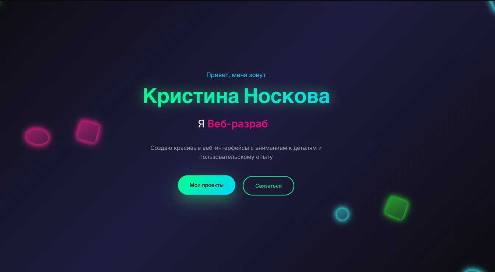

Персональное портфолио
Разработан полностью с нуля: от дизайна до деплоя. Кастомные анимации на Intersection Observer, темная тема. Webpack-сборка, оптимизация изображений и шрифтов. Lighthouse: 95+ по всем метрикам. Адаптив от 375px до десктопа.
- HTML5/SCSS
- JavaScript (ES6)
- Webpack 5
- Swiper.js
- БЭМ
- Адаптив